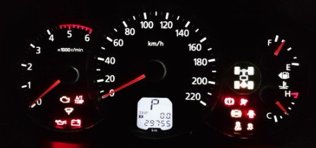

Умногих автовладельцев есть достаточно большой интерес к недорогим автосканерам начального уровня для диагно- стики автомобилей находящихся в их распоряжении. Также такие сканеры могут быть использованы студентами авто- мобильных специальностей и начинающими диагностами для "вхождения" в профессию без покупки дорогостоящих мультимарочных сканеров, т.к. они позволяют в режиме реального времени разбираться с процессами происхо- дящими в силовом агрегате автомобиля, как своего, так и автомобилей друзей и знакомых. Нередко это бывают автомобили совершенна разных марок, но вопросы, кото- рые интересуют автовладельцев, примерно одинаковые. Именно эти вопросы предлагаем рассмотреть в этой ста- тье а в конце подробно рассмотреть диагностику автомо- биля на примере широко распространенного адаптера на чипе ELM327 с помощью бесплатной версии MotorData
Предлагаем начать с краткого экскурса в историю и общего описания возможностей диагностики, а далее ответить на вопросы, поставленные в начале статьи.
Еще недавно на автомобилях существовала возможность считать диагностические коды неисправностей посредст- вом мигания индикатора "CHECK ENGINE" на комбинации приборов. Для этого было необходимо выполнить некото- рые манипуляции с выводами диагностического разъема. У современных автомобилей эта возможность осталась только для некоторых периферийных систем. Но у авто- владельцев и сегодня есть возможность самостоятельно диагностировать основные системы автомобиля, теперь уже с применением относительно недорогих и простых диагностических приборов, работающих по стандарту OBD-II. Многие из них позволяют автомобилистам не только самостоятельно провести диагностику при появле- нии индикации неисправности двигателя "CHECК ENGINE", но и контролировать выбранные параметры рабо- ты различных систем в движении. При включении зажига- ния загораются индикаторы на комбинации приборов, а затем в зависимости от логики работы системы часть из них гаснет через несколько секунд, а часть из них гаснут после того как двигатель запуститься.
В 1988 году Агентство по охране воздушных ресурсов Калифорнии (California Air Resources Board (CARB)) уста- новило законодательные нормы, касающиеся продавае- мых в штате Калифорния автомобилей. По этим законам были установлены требования к системам бортовой диаг- ностики, связанным с поиском неисправностей в системе снижения токсичности отработавших газов, что положило начало стандартизации кодов неисправностей в США и Европе. Эти требования стали известны как "Система бортовой самодиагностики I" (OBD-I), которая затем была принята производителями и для автомобилей, продавае- мых за пределами Калифорнии.
Основные требования OBD-I таковы: